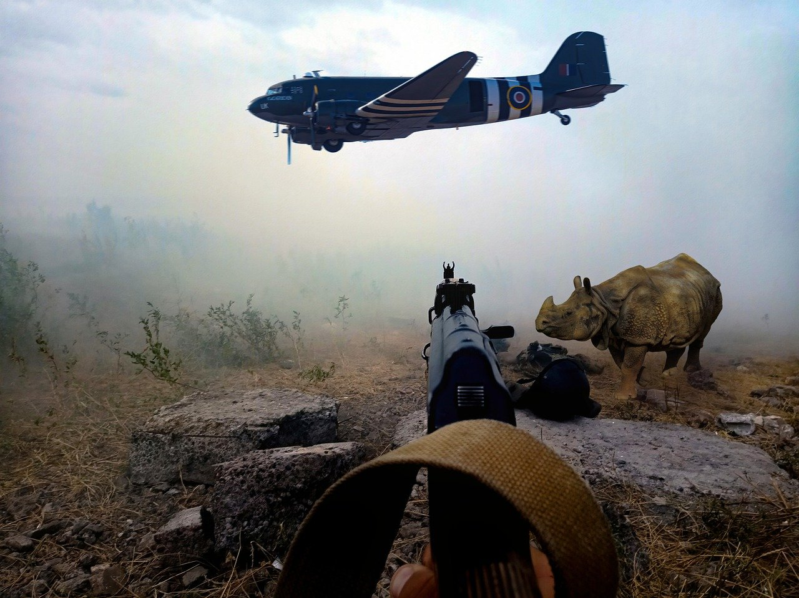

A nevem Varga Kristóf és nagyon szeretek focizni és mágneshorgászni.Miskolcon élek és 2009 ben születtem. A Kandó Kálmán Informatikai szaktechnikumba járok.
| 9.K | |||||
| Hé | Ke | Sze | Cs | P | |
| 0 | Programozási Alapok | ||||
| 1 | Magyar nyelv és irodalom | Angol nyelv | |||
| 2 | tesi | Magyar nyelv és irodalom | osztályfőnöki | ||
| Történelem | angol nyelv | angol nyelv | Magyar nyelv és irodalom | 4 | ikt | angol | angol | inf és távk. alapok | matematika | 5 | komplex term.tud. | magyar irodalom | komplex term.tud. | tesi | Honvédelem | 6 | ikt | matek | matek | matek | magyar nyelvtan | 7 | digitális kultúra | komplex term.tud. | töri | tesi |